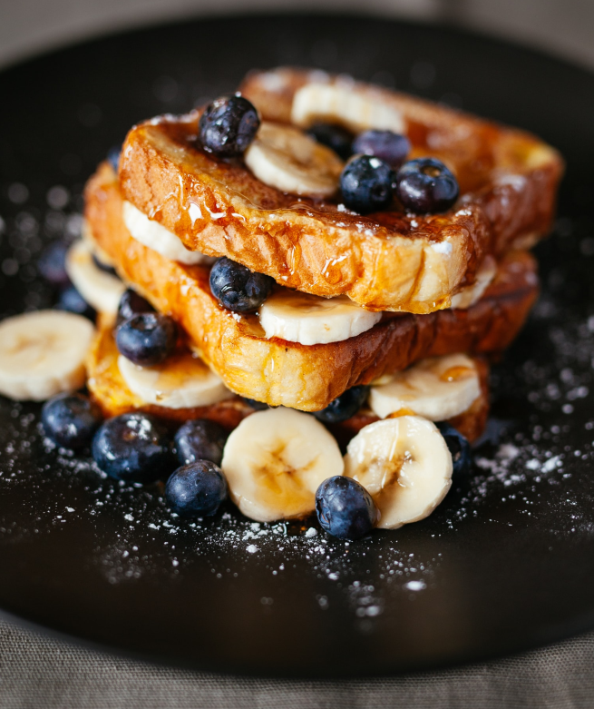
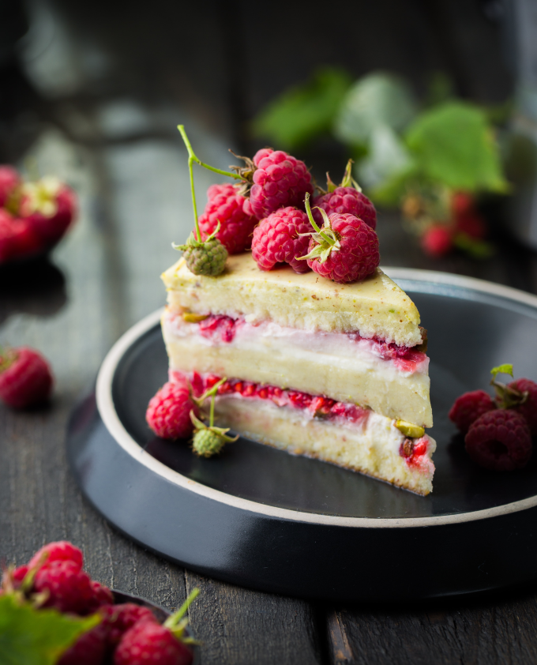

Våre mest populære retter
Laks med Squash
Laksemenyen vår er kjent for å inneholde beskyttende antioksidanter, noe som innebærer mange helsefordeler for et sunt og godt kosthold. Menyen inneholder også squash, som blant annet er full av vitamin-C.
Pris: 279kr per person

Tropisk Blåbærtoast
Den tropiske blåbærtoasten er en klassiker blant våre kunder. Blåbærene er håndplukket i norsk natur og smaker forfriskende. Den tropiske blåbærtoasten er et proteinrikt frokostalternativ.
Pris: 59kr per person

Bringebærkake med Pistasj
Bringebærkaken vår er en sertifisert favoritt i byen. Denne desserten kan man kjøpe for halv pris om man bestiller en full laksemeny på forhånd. Kaken kan lett gjøres glutenfri ved behov. Denne desserten er full av C-vitaminer, kalium og magnesium!
Pris: 169kr per person